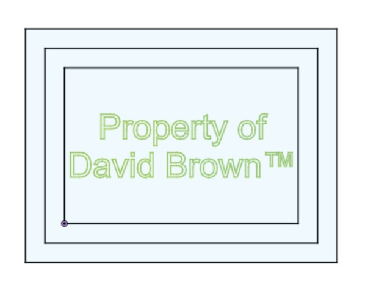
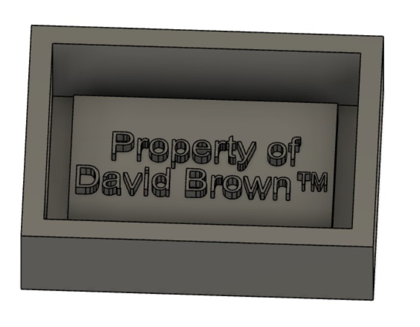
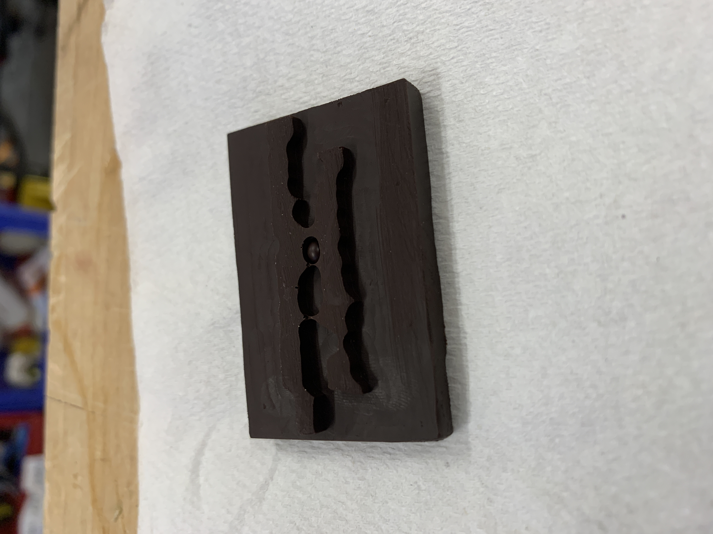
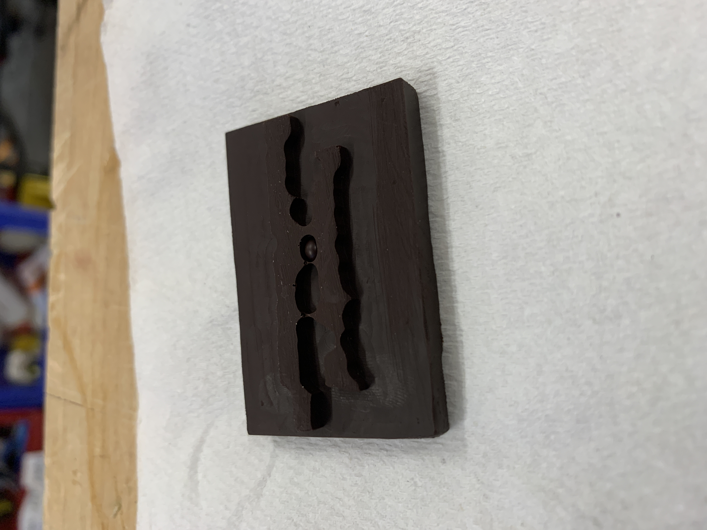

Introduction
This week the goal was to work with CNC Milling, Molding & Casting. This is a pretty fun week because I have done both of these things
before, but never exactly like this. I have been working in the physics lab with their milling machines which are significantly larger
than what we are using - and thus require you to be working on larger material and cuts. And back in my prime middle school days, I was
actually huge into metal casting. It's all on my youtube channel, which I will not be linking. Anyways, this week was a pretty fun week
to get to play around with doing all of this stuff again.
CNC is a really interesting process for cutting material with insane levels of precision. It is probally one of the best form of subtractive
manufaturing. As for molding and casting, what is there not to love - well maybe the process of trying not to let your head spin when thinking
about what part is the positive and what part is the negative (This was tripping me up for a long time). But with the ability to essentially recreate
any object into whatever material you want - endless possibilities.
Milling
So for the project this week I wanted to do mainly some testing of the machines to familiarize myself with what sorts of problems or
limitations may come up in the machining process. The goal for the week is to create a chocolate bar that says my name on it.

This is what I came up with for my sketch. I don't exactly know what I meant by the "Property of" or the "TM", but I just followed
my heart and thats the text I came up with. The next step is creating the extrusion for what I want cut into the wax. This proved to
be way too challenging for my small little brain to visualize. I kept getting confused into how to extrude based on what I wanted for
the final product. I think its because I am picturing that I will pour the chocolate into the mold upside down, and thus my intuision
was to have the extrusion also be upside down, but it actually needed to be opposite of the positive, thus right side up. I also had
to include walls around to hold in the casting material. After quadruple checking I ended up settling on this extrusion.

After that we get some pretty smooth sailing. I exported my extruded body as an STL file
Download here.
And then began setup on the monoFab CNC machine for cutting into the wax. Thankfully this wasn't too challenging, but I did have to scale
down by design to fit onto the wax block that was available to me (foreshadowing this for later). The first time I calculated the cut with
a 0.1 inch depth I wasnt happy with the detail in the preview, so I made it 0.01 and then started running the print. I quickly realized that
a 0.01 inch cut depth will take approximately and infinite amount of time (AKA longer than I want to be in the lab at 10:40 pm). So I stopped the
job and switched over to 0.025 which made a big difference, but I wasn't quite happy still so I bumped it up again to 0.05 inches. That managed to
get the cut up to the pace that I wanted and here is what I ended up with

So this is not exactly what I wanted. As you can see I lost a lot of the details in the letters - aka all the details. Its an issue of scaling down and
the bit size I had to use. The CNC bits go all the way down to say 1/64 of an inch, which is plenty small for making the holes in the lettering of my
design. But the issue is the shape of these bits doesn't allow for cutting away material on the edges, due to the cutting end of the bit thinning out
while having a large throat. Thus to do the print I had to use the 1/8 bit, as it was the only one that didn't thin out at the end. This 1/8 inch was
okay for my original design for getting the details of the lettering, but once I scaled down to print onto the section of the wax block I had available
to me, the required cuts were significantly less than 1/8 of an inch in diameter. Because of this, the software did not try to cut them, so I am instead
left with essentially the outlines of all the letters. Which at the end of the day is not the end of the world, and the rest of the cut went okay. If
I were to try and get both to work I think I would have to cut out the entirety of the outside with the 1/8 inch, and then switch bits to do the central
lettering with the smaller sized bits.
The other thing that did not appear to work correctly is the upper level depth. It really didn't seem to go deep enough to establish a height differential
between the top of the lettering and the wall. This part is pretty important for having the mold make a fully developed base, but I sanded the center down
slightly to fix it.
Molding
And now we move on to the next step which is creating the Mold. Since I wanted to make something out of chocolate, I used the food grade Silicon molds. It
was a pretty easy to make, just a simple 1 to 1 mix of the agent and reactant. Then pouring into the wax mold and trying to make sure it gets in all the
crevasses. Certainly a ton of bubbles when I poured it, which I was a bit nervous about. I then let it cure over night and ended up with this.


Casting
The last part is the casting with chocolate. I went and picked up 95% cocoa chocolate because apparently chocolate with lower sugar content will melt
better, and thus be easier to pour and cast without the crystal structure being destroyed. I gave this chocolate a taste test and it was absolutely
disgusting - I mean its not that bad, but there is literally 0 sweetness. Anyways... So I popped the chocolate into the toaster oven (maybe not
the most chef like maneuver I have done) and then went to pour. I used a ceramic dish to hold the chocolate which worked extremely well, as it is very
smooth so no chocolate sticks to it. Thankfully chocolate has a quick set time of about 30 minutes to properly cool, and this
is what I ended up with.
 

I am happy with how it turned out, and honestly it has more lettering detail than I anticipated. I wish I could have printed it larger, but I think
I will revisit chocolate casting with a slightly less self centered design. And no, it does not taste good.